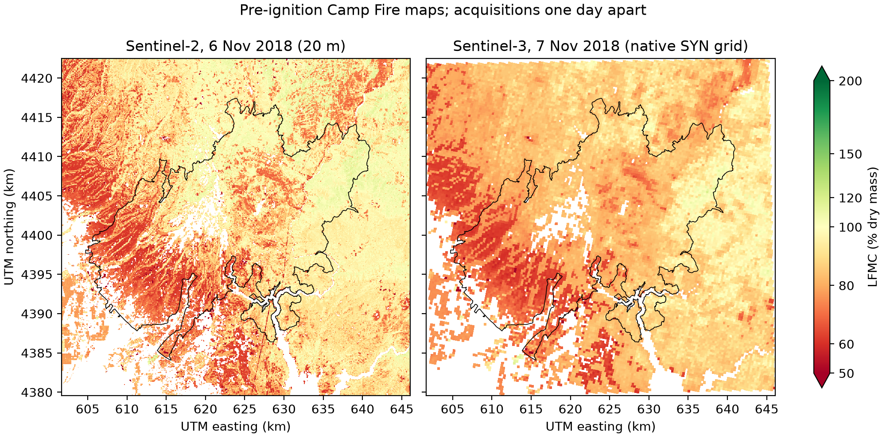

From satellite observations to a fuel-moisture map
lfmc-multisensor estimates live fuel moisture content (LFMC) from satellite
reflectance, weather and terrain. LFMC is water mass as a percentage of dry
vegetation mass: 100% means equal water and dry masses, and values above 100%
are possible. The package applies the
published vegetation models to
a chosen area and date, then saves the predictions with quality codes and input
provenance. It does not train a new model during a mapping run.
Start with the small Sardinia example before changing the area or product. This gives you a known configuration for checking installation, provider access and the model files.
Use the desktop GUI if you prefer selecting a shapefile and filling in a form. The command-line tutorial walks through the same processing stages with an explicit JSON request.

Historical Camp Fire example from Figure A3 of Pampanoni et al. (2026), reproduced unmodified under CC BY 4.0. See citation and attribution. Direct workflows use a selected WorldCover 2021 or 2020 snapshot.
- Install in Conda and supply the trusted model bundles.
- Configure your provider access.
- Make your first map.
- Read LFMC, QA and provenance.
- Change the configuration for another supported example.
- Summarise the AOI through time, overall and by vegetation type.
The method and validation guide explains how inputs become predictions, including optional weather adjustment. Consult troubleshooting when a run stops or returns few valid pixels.
The current candidate defaults to WorldCover 2021 for any acquisition year; 2020 is selectable. Enter a single date or an inclusive date range in the GUI. Range runs produce one map per matching scene and a manifest of completed maps. Downloads can be substantial even for a small area because some products require complete source assets. Keep the cache for subsequent runs. Accounts and model files belong on your machine; they are not supplied by a documentation website.